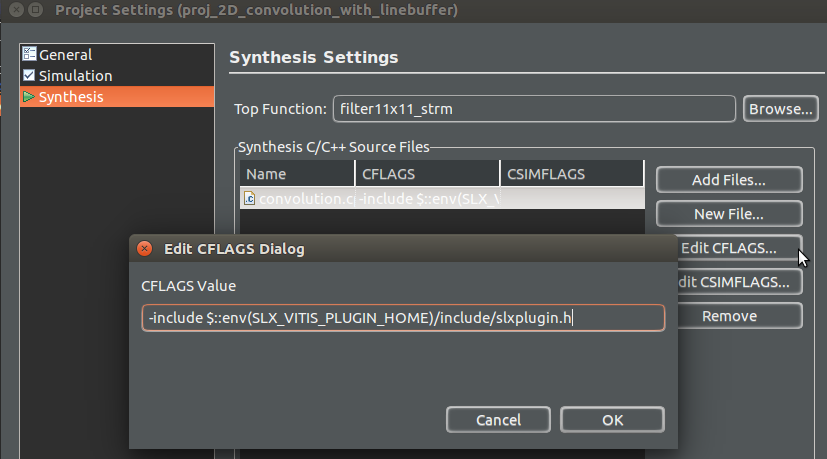

Instructions¶
This section provides installation steps and instructions to use the SLX Plugin in stand-alone mode with Vitis 2020.2. For instructions to use the plugin with SLX FPGA, refer to the SLX FPGA User Guide after following the steps in the Installation section.
Supported machines and requirements¶
The SLX Plugin currently supports 1 Ubuntu 18.04 on x86_64 architectures. The next steps assume that Ubuntu 18.04 has been installed on your machine. Since the SLX Plugin is an add-on for Vitis 2020.2, these steps also assume that Vitis is properly installed on your machine.
Package contents¶
Untar the provided SLX Plugin package. This should result in the following folder structure:
.
└── slxplugin-x.y.z
├── doc
├── examples
├── exports
├── include
│ └── slxplugin.h
├── lib
│ └── slxplugin.so
└── README
The contents are as follows:
doc: the SLX Plugin documentation in html and pdf format.
examples: example designs that benefit from the SLX Plugin transformations and show the plugin in action.
exports: setup script. Source this script every time you want to use the plugin.
include: the SLX Plugin header file to be added via a Vitis HLS Tcl script to activate the plugin.
lib: the SLX Plugin library file to be added via a Vitis HLS Tcl script to activate the plugin.
README: file with quick pointers and guidelines.
Installation¶
Once the SLX Plugin is unpacked, no further installation is required. Just execute the following command in your Linux console. This allows our example scripts and SLX FPGA to locate the plugin files in your machine.
source exports
This will set the environment variable SLX_VITIS_PLUGIN_HOME to the location
of your SLX Plugin package.
Attention
SLX_VITIS_PLUGIN_HOME is only set in the console session where the
command is executed. Execute it in the console where you will execute
Vitis HLS.
If you open a new console, remember to execute the command again.
Tip
Add the command to your .bashrc if you want to automatically set
SLX_VITIS_PLUGIN_HOME every time a new console is opened.
Afterwards, the SLX Plugin can be injected into the Vitis HLS compilation flow by adding just a few Tcl commands to an Existing Vitis HLS Command Line Project (Tcl) or an Existing Vitis HLS GUI Project. If you use the SLX Plugin with SLX FPGA, read how to use the plugin with an SLX FPGA Project.
Existing Vitis HLS Command Line Project (Tcl)¶
If your Vitis HLS project is a command line project based on Tcl, you can enable the plugin by adding the following commands to your script:
# 1. Variable pointing at the plugin location
set slxplugin [file normalize $::env(SLX_VITIS_PLUGIN_HOME)]
# 2. Add slxplugin.h
# - <your-design-files> refers to your C/C++ files
add_files <your-design-files> -cflags "-include $slxplugin/include/slxplugin.h"
# 3. Add slxplugin.so using Vitis HLS injection mechanism
# - <slx-plugin-options> refers to options provided by SLX Plugin
set ::LLVM_CUSTOM_CMD [concat \
{$LLVM_CUSTOM_OPT -load} $slxplugin/lib/slxplugin.so \
<slx-plugin-options> \
{$LLVM_CUSTOM_INPUT -o $LLVM_CUSTOM_OUTPUT}]
These three commands will activate the SLX Plugin for your design. They perform the following actions:
The first command sets a variable that points to the plugin installation directory.
The second command adds the plugin header file that enables Vitis HLS compilation with the SLX Plugin directives. Replace
<your-design-files>with your actual C/C++ files that contain additional SLX Plugin directives.The third command injects the plugin library file into the Vitis HLS synthesis process. This allows performing the transformations provided by the SLX Plugin. Replace
<slx-plugin-options>with the SLX Plugin options for the current solution. For example, replace it with-slx-prepare-for-interchange -slx-loop-interchangewhen using the plugin with the_SLXLoopInterchangedirective.csynth_designapplies these options during synthesis. Options currently supported by the SLX Plugin are described in the Options reference guide section.
Existing Vitis HLS GUI Project¶
If you have an existing Vitis HLS GUI project, you need to perform two steps:
in the GUI, update the
CFLAGSinProject->Project Settingsdialog, under the Synthesis tab. Add-include $::env(SLX_VITIS_PLUGIN_HOME)/include/slxplugin.has shown in the picture:Include the SLX Plugin header in CFLAGS.¶
Add the code below to
scripts/vitis_hls_init.tcl. You can create the file in the GUI usingFile->New File. If thescriptsfolder is not yet present, click theCreate Foldericon to add it. Create thevitis_hls_init.tclin that folder. The file opens in the GUI but is not editable there. UseFile->New Fileagain to open the dialog and go to thescriptsfolder. Right-click onvitis_hls_init.tclandCopy locationto get the path. Please then open the file with your favorite text editor to add the code:# add slxplugin.so using Vitis HLS injection mechanism set ::LLVM_CUSTOM_CMD [concat \ {$LLVM_CUSTOM_OPT -load} $::env(SLX_VITIS_PLUGIN_HOME)/lib/slxplugin.so \ <slx-plugin-options> \ {$LLVM_CUSTOM_INPUT -o $LLVM_CUSTOM_OUTPUT}]
These are adaptations of the commands already explained in the previous section
for using the SLX Plugin with an Existing Vitis HLS Command Line Project (Tcl).
Make sure that you are modifying the file that corresponds to your active
solution, and remember to adapt <slx-plugin-options> as explained before.
Main option combinations¶
The most useful sets of SLX Plugin options to use as <slx-plugin-options>
are:
To use Loop Interchange (_SLXLoopInterchange), enable with:
-slx-prepare-for-interchange -slx-loop-interchange
To have the
_SLXLoopInterchange()directive in the source code but skip its application or ignore a failure to apply it: add-slx-remove-directivesto the previous set.
To try out IR design optimizations, enable with:
-slx-prepare-for-interchange -slx-prepare-all
The options are explained at the end of this chapter in the Options reference guide section.
Loop Interchange (_SLXLoopInterchange)¶
The SLX Plugin augments Vitis HLS with an additional optimization directive
for achieving higher performance.
The new synthesis directive is called _SLXLoopInterchange and can be applied
to a system of nested loops for performing a loop interchange.
Loop interchange is a transformation that operates by exchanging the order of
two iteration variables in the loop nest, effectively interchanging the
iteration order in the loop system.
_SLXLoopInterchange is used in the source code like any other Xilinx
HLS pragma. When added to a loop that is part of a loop nest, the SLX Plugin
will interchange the target loop and its immediate parent.
The target loop is defined as the loop that contains _SLXLoopInterchange
within its direct body’s scope.
The directive is using the C function call style syntax 2 as shown in the
next few examples.
The <slx-plugin-options> to apply this directive are
-slx-prepare-for-interchange -slx-loop-interchange.
First, consider the code excerpt shown below:
LoopN: for ( int i = 0; i < n; i++ ) {
LoopM: for ( int j = 0; j < m; j++ ) {
_SLXLoopInterchange();
out[i][j] = compute( in[i][j] );
}}
It has a nested loop composed of LoopN (the inner loop) and LoopM
(the outer loop).
The _SLXLoopInterchange directive is added under LoopM, which turns
into the target to be interchanged with its immediate parent.
Since LoopM has only one parent, the action leads to interchange
LoopM with LoopN.
LoopM will be transformed into the outer loop and LoopN
into the inner one.
This will effectively transform the i then j iteration order into
j then i.
For the following code example, things work as follows:
LoopO: for ( int i = 0; i < o; i++ ) {
LoopN: for ( int j = 0; j < n; j++ ) {
_SLXLoopInterchange();
LoopM: for ( int k = 0; k < m; k++ ) {
out[i][j][k] = compute( in[i][j][k] );
}}}
_SLXLoopInterchange is added under LoopN, which turns into the target
to be interchanged with LoopO. This will effectively transform the
i then j then k iteration order into j then i then k.
Similarly, _SLXLoopInterchange could be applied to LoopM if the
directive is moved two lines down,
which would in turn switch the iteration order to i then k then j.
The loop interchange transformation has a good impact on a design’s
performance when by interchanging iteration orders one relaxes conditions
that limit parallelism or pipelining. If this is possible for a hotspot loop,
then one can achieve a good improvement in initiation intervals and latency.
The following code excerpt shows a situation that benefits from
_SLXLoopInterchange:
LoopN: for(int i = 0; i < n; i += 1) {
LoopM: for(int j = 0; j < m; j += 1) {
_SLXLoopInterchange();
acc[i] = acc[i] + data[i][j];
}}
In the code there is a loop carried dependency on variable acc in
the inner LoopM that blocks potential pipelining with II=1 under
certain circumstances.
Interchanging the loop moves the dependency from the inner to the outer loop
LoopN, effectively relaxing the constraint that blocks achieving pipeline
with II=1. For more information about this example and other cases that
benefit from _SLXLoopInterchange, refer to the Examples
_SLXLoopInterchange can be used alone or in combination with other
Vitis HLS synthesis directives and constraints to achieve reduced latency and increased throughput.
When this happens, other Vitis HLS loop directives in the same loop of a
_SLXLoopInterchange migrate to the new loop level after the interchange
is performed. This means that the following code:
LoopN: for ( int i = 0; i < n; i++ ) {
LoopM: for ( int j = 0; j < m; j++ ) {
_SLXLoopInterchange();
#pragma HLS pipeline
out[i][j] = compute( in[i][j] );
}}
will be transformed to:
LoopM: for ( int j = 0; j < m; j++ ) {
#pragma HLS pipeline
LoopN: for ( int i = 0; i < n; i++ ) {
out[i][j] = compute( in[i][j] );
}}
Attention
If the option -slx-loop-interchange or -slx-remove-directives
is not used, Vitis HLS will fail during synthesis with an error:
WARNING: [HLS 200-412] 1_VALIDATOR__call_node_lacks_subCdfg and
Stack dump: Running pass 'CDFG Construction Pass' on module 'a.o.2.bc'..
Please check that the LLVM_CUSTOM_CMD is being set properly -
this should appear in the Vitis HLS console output.
Transformation safety and legality¶
Performing a loop interchange is not always safe or legal. Exchanging the iteration order of a loop nest could sometimes lead to an invalid computation. The SLX Plugin incorporates a layer to detect transformation safety and legality and rejects it when it is certain the interchange can’t be applied. The following rules apply:
Loop interchange is limited to perfect loop nests. This limitation will be relaxed in a future release.
Dependency inversion issue: the transformation is rejected if by interchanging you will compute a value either earlier or later compared to its original use point. For example, you are reading from a row that is only updated in the future to compute a value that is needed in the present.
SLXLoopInterchangechecks for legality in this case and rejects the transformation.Floating point associativity issue: floating point computation is not necessarily associative. That is,
(a + b) + cis not necessarily equal toa + (b + c). In many cases, this only leads to minor precision differences.SLXLoopInterchangewon’t try to reason about the user’s intentions from this perspective. The suggested method is to address this via testbenches. If your testbench fails, disableSLXLoopInterchange.Loop flatten conflict: when applied,
SLXLoopInterchangedisables the Vitis HLS loop flatten transformation. By default, loop flatten is automatically applied by Vitis HLS to perfect or semi-perfect loop nests. Additionally, it can be controlled withset_directive_loop_flattenin a Tcl directives script or with#pragma HLS loop_flattenin the C/C++ source code. If a_SLXLoopInterchangeis applied to the same loop then a warning is reported:``WARNING: [SLX] HLS flatten for '<loop>'(<location>) is disabled as the loop is transformed into a do-while loop``
Loops composed of statically unknown bounds are not supported. If the safety check is not able to tell for certain that an access will be properly bounded when accessing the array, the loop gets rejected. In the following example, it is not possible to tell that
m<=10. Becausea[0][10]addresses the same element asa[1][0]in the C memory model, there is a possibility that changing the iteration order will cause some data to be re-written by out-of-bound accesses. For this reason, it is forbidden.int a[10][10]; void test(int n, int m) { for (int i = 0; i < n; ++i) for (int j = 0; j < m; ++j) a[i][j] = j; // This access is causing an issue }
IR design optimizations¶
The SLX Plugin contains a few automatic compiler transformations that help improve an HLS design’s internal program representation before the RTL code is generated. The most interesting scenario is when it helps to booster Vitis HLS’ capabilities for automatic relocation of loop invariant memory accesses. While this doesn’t apply to all HLS designs, some designs benefit from improved results when, for example, expensive memory accesses are manipulated in a way that they end up outside of a loop nest. In particular, if the loop nest happens to be a computation hotspot, this can be of tremendous help to improve latency and throughput without manual C/C++ source code changes.
This feature doesn’t require adding directives to source code. It is enabled
by using the options -slx-prepare-for-interchange and -slx-prepare-all
in the Tcl command that injects the SLX Plugin to the Vitis compilation process.
If both options are specified, then IR design optimizations are
applied to all functions in the design. If -slx-prepare-all is not
specified, then IR design optimizations will only apply to functions that
contain an _SLXLoopInterchange directive in one of their loops.
For more information about the Tcl command, see Existing Vitis HLS Command Line Project (Tcl).
For more information about the options, see the Options reference guide.
An example that shows and explains an IR design optimization is provided in
Examples. Refer to the tiny-sha3 folder.
Options reference guide¶
The SLX Plugin currently supports the following options that control its behavior:
-slx-prepare-for-interchange: perform IR design optimization passes and enablers for loop interchange. By default, this only applies for functions calling_SLXLoopInterchange(). To change the default behavior, see-slx-prepare-all. It reports in the console if it knows it will result in a Xilinx HLS pragma not applying:``WARNING: [SLX] HLS flatten for '<loop>'(<location>) is disabled as the loop is transformed into a do-while loop``
-slx-prepare-all: only valid in combination with-slx-prepare-for-interchange. When given, IR design optimization passes are applied to all functions and not only those containing_SLXLoopInterchange().-slx-loop-interchange: perform loop interchange if possible. By default, only do so for functions calling_SLXLoopInterchange(). It reports in the console if the interchange was successful:``SLX-INFO: _SLXLoopInterchange applied successfully`` ``SLX-ERROR: _SLXLoopInterchange was requested but was not successfully applied``
-slx-fatal-unapplied-interchange: only valid in combination with-slx-loop-interchange. The default is to issue anERRORif the_SLXLoopInterchange()is not applied, but when given with the=FALSEsuffix a non-fatalWARNINGis produced instead.-slx-remove-directives: delete_SLXLoopInterchange(). This is useful if the current solution should not include loop-interchange, or if loop-interchange was not possible and you wish to ignore this.
For example, if all options are applied, the last command in the setup Tcl script will be:
# add slxplugin.so using Vitis HLS injection mechanism
set ::LLVM_CUSTOM_CMD [concat \
{$LLVM_CUSTOM_OPT -load} $slxplugin/lib/slxplugin.so \
-slx-prepare-for-interchange \
-slx-prepare-all \
-slx-loop-interchange \
-slx-remove-directives \
{$LLVM_CUSTOM_INPUT -o $LLVM_CUSTOM_OUTPUT}]
Footnotes